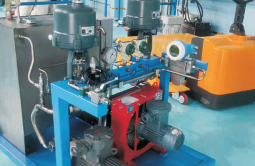
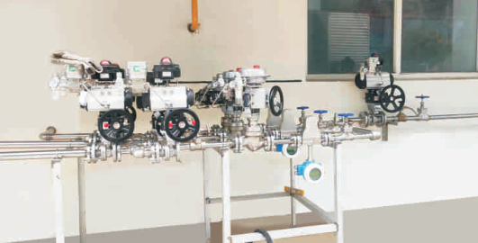

Массовые расходомеры Mass-EXPERT для измерения водорода под высоким и сверхвысоким давлением (до 96 МПа). Оптимальное решение для заправочных станций H₂, дозирования водорода в топливные элементы и систем учёта водородной инфраструктуры. Специальные материалы, стойкие к водородному охрупчиванию, и исполнение PK гарантируют безопасную и точную работу в самых жёстких условиях.
Кориолисовые расходомеры Mass-EXPERT обеспечивают прямое измерение массового расхода газообразного водорода (H₂) и водородсодержащих газовых смесей в широком диапазоне давлений — от десятков бар до сверхвысоких 96 МПа (960 бар).
Измерение массового расхода газообразного водорода высокой чистоты (99,9–99,999%) на линиях заправки, хранения и распределения. Прямое массовое измерение исключает погрешности, связанные со сжимаемостью газа.
Расходомеры для водородных заправочных станций (HRS) с рабочим давлением 35–96 МПа. Сертифицированные решения для коммерческого учёта водорода при заправке пассажирского и коммерческого транспорта.
Прецизионное дозирование водорода в топливные элементы и энергоустановки. Высокая точность при малых расходах — оптимальное решение для лабораторных стендов и промышленных систем.
Измерение синтез-газа (H₂ + CO), смесей водорода с метаном (H₂ + CH₄), продувочных газов и других водородсодержащих композиций в нефтехимии, металлургии и энергетике.
Измерение водорода — одна из самых сложных задач в расходометрии. Mass-EXPERT решает её благодаря специальным конструктивным и материаловедческим решениям.
Специальные композитные металлы и сплавы, прошедшие испытания на стойкость к водородному охрупчиванию (hydrogen embrittlement). Материалы трубок и корпуса исключают риск разрушения под действием H₂.
Исполнение PK (сверхвысокое давление) обеспечивает надёжную работу при давлении до 96 МПа. Усиленная конструкция сенсора и специальные уплотнения гарантируют герметичность и безопасность.
Увеличенная амплитуда колебаний трубок и прецизионная электроника обеспечивают стабильные показания даже при минимальных расходах водорода, характерных для дозирования в топливные элементы.
Поддержка высоконапорных стандартов: UNF (Unified Fine Thread), VCO (O‑Ring Face Seal), VCR (Metal Gasket Face Seal). Герметичные соединения для сверхвысокого давления без утечек.
Широкий U-образный тип трубок (модификация PK) оптимизирован для газов высокого давления. Минимальное гидравлическое сопротивление и максимальная чувствительность к массовому расходу.
Одновременное измерение массового расхода, плотности, температуры и давления — в одном приборе. Полный контроль состояния водородной системы в реальном времени.
Молекулярный водород при высоких давлениях проникает в кристаллическую решётку металлов, вызывая потерю пластичности и образование трещин (водородное охрупчивание). Расходомеры Mass-EXPERT используют специальные сплавы с низкой восприимчивостью к H₂ — композитные металлы, прошедшие циклические испытания при давлении до 96 МПа в среде водорода. Это гарантирует целостность измерительных трубок и безопасность эксплуатации в течение всего срока службы.
Модификация PK (Pressure — высокое давление, K — широкая U-образная трубка) разработана специально для работы с водородом и другими газами при сверхвысоких давлениях.
Максимальное рабочее давление до 96 МПа — рекордный показатель среди кориолисовых расходомеров. Превышает заявленный номинал в 1,5 раза для обеспечения запаса прочности.
Измерительные трубки из композитного металла, стойкого к водородному охрупчиванию. Гладкая внутренняя поверхность — минимальное гидравлическое сопротивление.
Увеличенная амплитуда колебаний U-образных трубок обеспечивает высокое отношение сигнал/шум даже при минимальных расходах водорода — идеально для дозирования.
Поддержка стандартных высоконапорных соединений: UNF-резьба для прямых фитингов, VCO (уплотнение O-кольцом) и VCR (металлическое уплотнение) для максимальной герметичности.
| Модель | Макс. рабочее давление | Тип сенсора | Присоединения |
|---|---|---|---|
| Mass-EXPERT-003..PK | ≤ 96 МПа / ≤ 50 МПа / ≤ 40 МПа | U-образный (широкий) | UNF, VCO, VCR |
| Mass-EXPERT-004..PK | ≤ 35 МПа | U-образный (широкий) | UNF, VCO, VCR |
| Mass-EXPERT-008..PK | ≤ 30 МПа / ≤ 45 МПа | U-образный (широкий) | UNF, VCO, VCR |
| Mass-EXPERT-015..PK | ≤ 30 МПа / ≤ 45 МПа | U-образный (широкий) | UNF, VCO, VCR |
Массовые расходомеры Mass-EXPERT в исполнении PK рекомендованы для водородных заправочных станций (HRS) с давлением 70 МПа (700 бар) и 96 МПа (960 бар), дозирования H₂ в топливные элементы на транспорте и стационарных энергоустановках, а также для коммерческого учёта водорода в распределительных сетях. Сочетание стойкости к H₂-охрупчиванию, сверхвысокого давления и прецизионной точности делает PK-исполнение отраслевым стандартом для водородной энергетики.
Для безопасной работы с водородом под высоким давлением Mass-EXPERT применяет материалы, прошедшие специальные испытания на стойкость к водородному охрупчиванию (hydrogen embrittlement resistance).


Проверенные комбинации типов сенсоров, материалов и присоединений для типовых задач водородной инфраструктуры
Базовое решение для водородных заправочных станций и линий высокого давления H₂.
Специальные сплавы и покрытия, исключающие водородное охрупчивание.
Высоконапорные присоединения для герметичной работы с водородом.
Прецизионная конфигурация для подачи H₂ в топливные ячейки.
Для коммерческого учёта водорода на заправочной станции выбирайте комбинацию: Mass-EXPERT-003..PK (до 96 МПа) + композитный металл PK + присоединения VCR + трансмиттер ME200 с HART/Modbus. При необходимости измерений на нескольких линиях — multi-drop конфигурация по RS-485. Для лабораторных стендов дозирования — Mass-EXPERT-003..PK с UNF-соединениями.
Наши инженеры помогут выбрать оптимальный типоразмер, материал трубок и тип присоединения для вашей задачи — от лабораторного дозирования H₂ до заправочной станции на 96 МПа.
Связаться с нами На главную